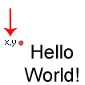
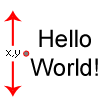
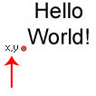

draw_set_valign(valign);
| Argument | Description |
|---|---|
| valign | Vertical alignment. |
Returns : N/A
This function is used to align text along the vertical axis and changing the vertical alignment will change the position and direction in which all further text is drawn, with the default value being
fa_top. The following constants are accepted:
| Constant | Alignment |
|---|---|
| fa_top |  |
| fa_middle |  |
| fa_bottom |  |
draw_set_halign(fa_center);
draw_set_valign(fa_middle);
draw_text(100, 32, "Score : " + string(score));
The above code will draw the score centered around the very center of the text.